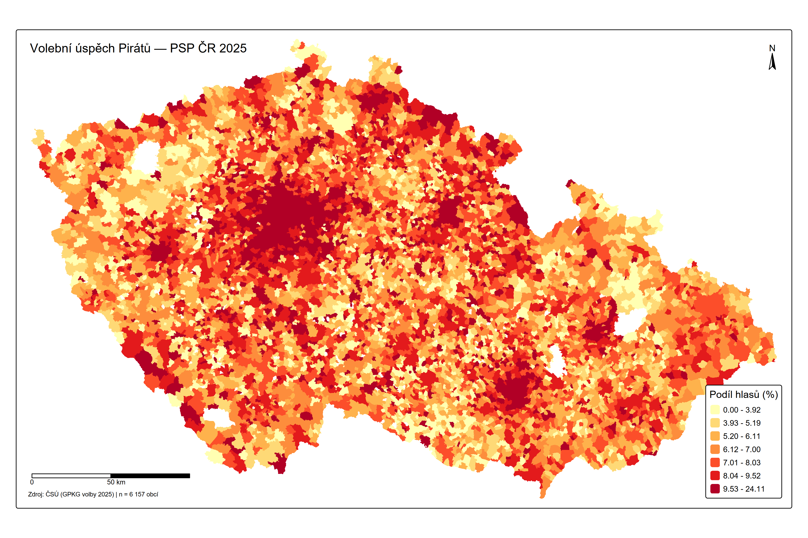
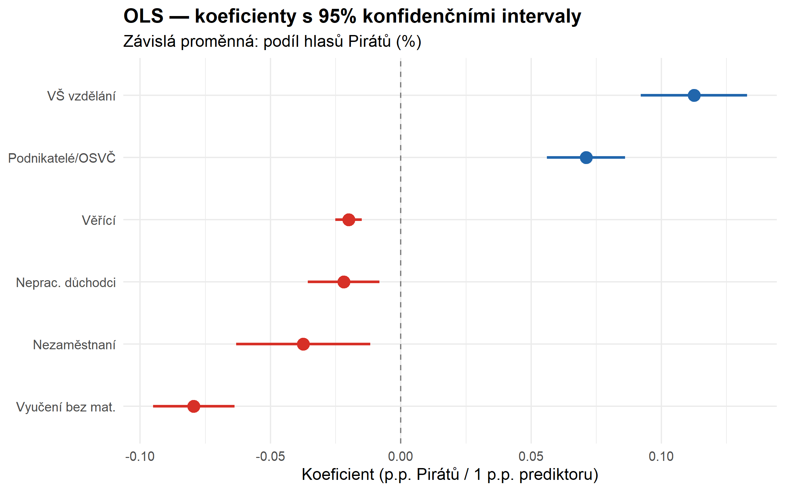
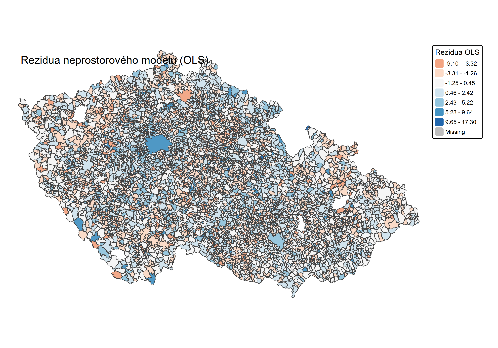
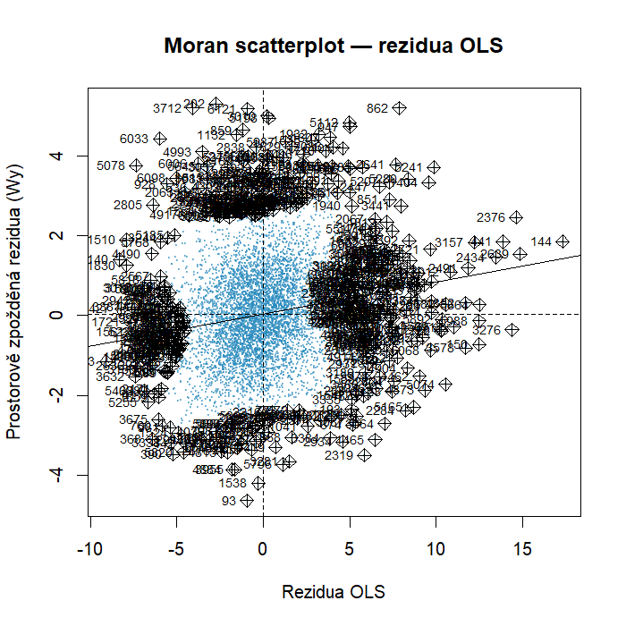
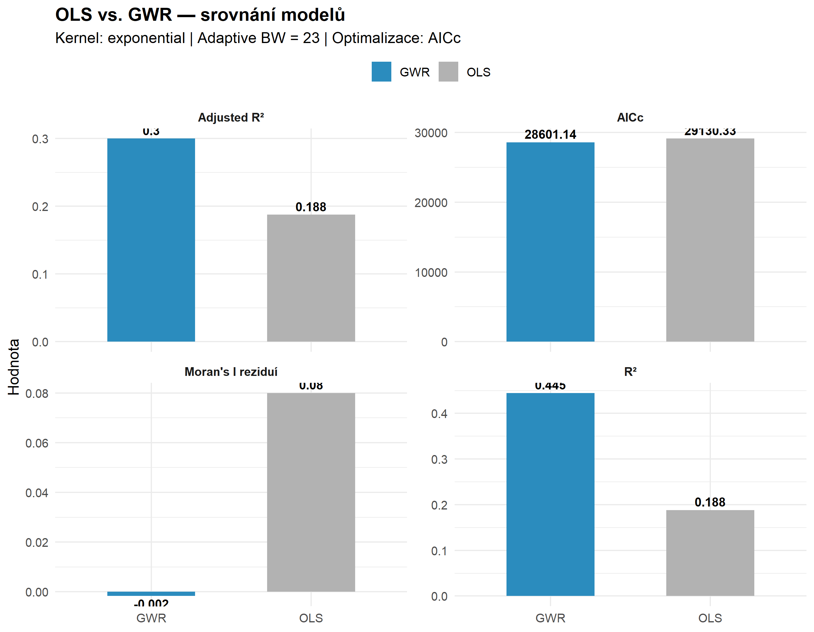
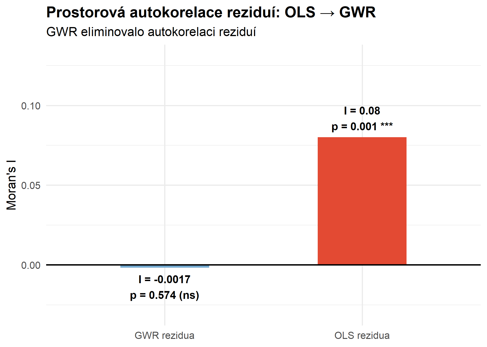
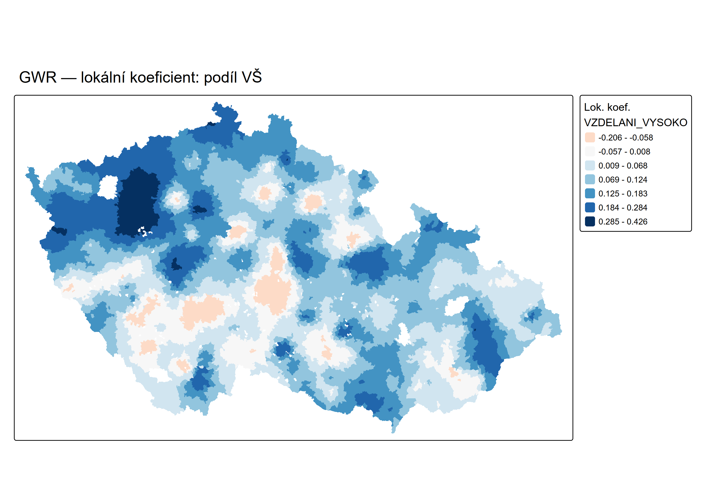
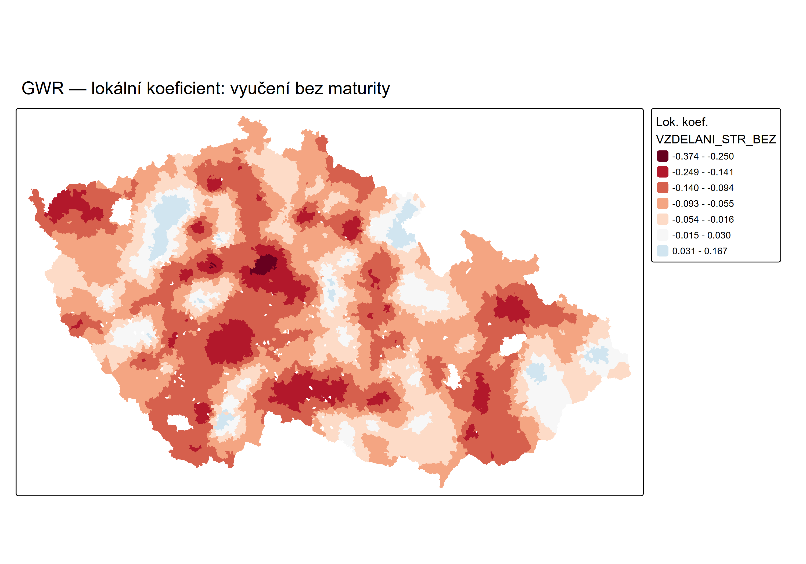
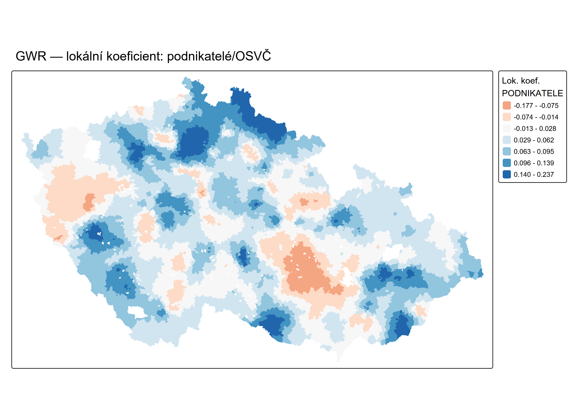
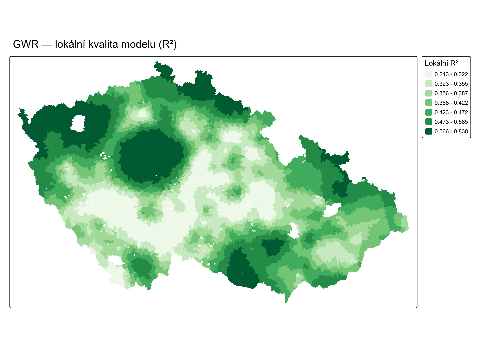

Geographically Weighted Regression na úrovni 6 157 českých obcí — odkrývá prostorovou nestacionaritu vztahů mezi sociodemografií a volební podporou České pirátské strany.
Strana digitální éry — transparentnost, participace a otevřená správa věcí veřejných.
Česká pirátská strana byla registrována jako právnická osoba v roce 2012, navazujíc na mezinárodní pirátské hnutí vzniklé v roce 2009. Hlásí se k ideálům digitální svobody, radikální transparentnosti a přímé demokracie.
Cílová voličská základna je tvořena zejména mladými, vysokoškolsky vzdělanými voliči v metropolitních oblastech — Praha, Brno a větší univerzitní centra. Tento vzorec bude empiricky potvrzen i naší prostorovou analýzou.
Parlamentní volby 2013–2025: od okrajové strany k relevantnímu hráči a zpět.
| Volby | Rok | Výsledek (%) | Poznámka |
|---|---|---|---|
| PSP ČR | 2013 | 2,66 % | Pod volební hranicí — výsledky nepřekročily 5 % |
| PSP ČR | 2017 | 10,79 % | Samostatná kandidatura — historicky nejlepší výsledek |
| PSP ČR | 2021 | ≈ 15,6 % | Koalice Piráti + Starostové (STAN) — podíl nelze přesně oddělit |
| PSP ČR | 2025 | 8,97 % | Analyzované volby — samostatná kandidatura |
Silná koncentrace podpory v metropolitních centrech. Průměr obcí (6,78 %) výrazně zaostává za celostátním výsledkem.

6 prediktorů ze Sčítání lidu, domů a bytů 2021 (SLDB) — vybraných na základě korelační analýzy a teorií volebního chování.
ČSÚ GPKG — volby do PSP ČR 2025.
Proměnná: podíl platných hlasů pro Piráty (%).
Ověřeno z volby.cz — Praha: 16,85 % ✓
SLDB 2021 — 17 indikátorů na úrovni LAU2.
Po korelační analýze a VIF testu zvoleno 6 prediktorů.
Všechny proměnné v % — podíly z celkové populace.
Polygony obcí ČR — S-JTSK / Krovak East North (EPSG:5514).
Metrický CRS vhodný pro GWR vzdálenostní výpočty.
Filtrace: 4 vojenské újezdy + 97 obcí < 50 voličů odstraněno.
| Prediktor | Popis | Směr |
|---|---|---|
VZDELANI_VYSOKO |
Podíl VŠ vzdělaných | ↑ pozitivní |
VZDELANI_STR_BEZ |
Podíl vyučených bez maturity | ↓ negativní |
NEPRAC_DUCH |
Podíl nepracujících důchodců | ↓ negativní |
PODNIKATELE |
Podíl podnikatelů / OSVČ | ↑ pozitivní |
NEZAMEST |
Míra nezaměstnanosti | ↓ negativní |
VERICI |
Podíl věřících | ↓ negativní |
Referenční model — každý prediktor má jediný globální koeficient platný pro celé území ČR.
| Prediktor | Koeficient | Std. chyba | p-hodnota |
|---|---|---|---|
| (Intercept) | 8,667 | 0,433 | *** |
| VŠ vzdělání | +0,112 | 0,010 | *** |
| Vyučení bez maturity | −0,079 | 0,008 | *** |
| Neprac. důchodci | −0,022 | 0,007 | ** |
| Podnikatelé / OSVČ | +0,071 | 0,008 | *** |
| Nezaměstnanost | −0,037 | 0,013 | ** |
| Věřící | −0,020 | 0,003 | *** |
*** p < 0.001 · ** p < 0.01 · VIF max = 2,71 (bez multikolinearity)

Moran's I test reziduí OLS modelu: mají sousední obce podobná rezidua? Pokud ano, OLS nestačí.


Každá obec dostane vlastní regresní model — 6 157 lokálních modelů místo jednoho globálního.


Lokální koeficienty mění znaménko napříč územím — klíčový důkaz nestacionarity. Vztah mezi vzděláním a hlasováním pro Piráty není všude stejný.
| Prediktor | OLS globální | Lok. minimum | Lok. medián | Lok. maximum | Znaménkový flip? |
|---|---|---|---|---|---|
| VŠ vzdělání | +0,112 | −0,206 | +0,089 | +0,426 | Ano ✓ |
| Vyučení bez maturity | −0,079 | −0,374 | −0,075 | +0,167 | Ano ✓ |
| Podnikatelé / OSVČ | +0,071 | −0,177 | +0,045 | +0,237 | Ano ✓ |



Lokální R² ukazuje, jak dobře GWR vysvětluje volební chování v každé konkrétní obci.

GWR odkryla prostorovou nestacionaritu, která v globálním OLS modelu zůstala skryta.
Kombinace vzdělání, věku, ekonomiky a religiozity vysvětluje globálně jen ~19 % variability (OLS R² = 0,188). GWR zvyšuje vysvětlitelnost na 44,5 % — ale klíčové je odkrytí lokálních vzorců, ne pouhé zvýšení R².
Výrazná lokální variabilita koeficientů — vztahy nejsou všude stejné (Moran's I OLS = 0,080 ***). Po GWR je prostorová autokorelace eliminována (Moran's I GWR = −0,002, p = 0,574 ns).
Model potvrzuje silný pozitivní efekt vysokoškolského vzdělání v Praze a Brně. V průmyslových regionech se ale koeficient vzdělání obrací — lokální kontext dominuje nad globálním vzorcem.
AICc poklesl o 529 bodů (29 130 → 28 601). Adj. R² vzrostl o 11,2 p.p. navzdory penalizaci za 1 272,8 efektivních parametrů. GWR prokázalo přínos nad rámec prostého přetrénování.
Data jsou agregovaná za obce, nikoli za jednotlivé voliče. Vztahy platí na úrovni obcí — přímá interpretace o individuálním volebním chování by byla metodicky chybná.
BW = 23 sousedů (0,37 % dat) je velmi lokální. Riziko přetrénování existuje, ale je mitigováno adjusted R² — po penalizaci komplexity model stále přináší přírůstek.
6 prediktorů ze SLDB 2021 nepokrývá veškeré determinanty volebního chování. Stranická identita, lokální politický kontext ani historické vzorce nejsou v modelu zahrnuty.